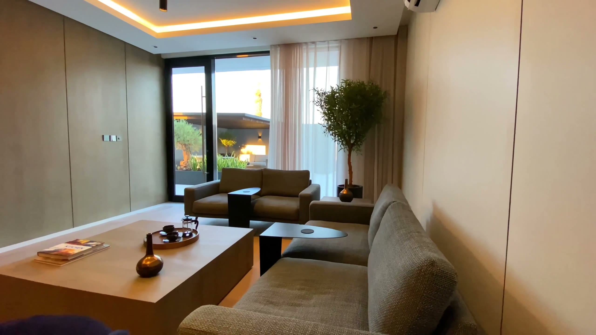

Websites & worlds

Websites & worlds
From a single page to a complete world — drawn to measure, never a template. Multilingual, cookie-free, with a real path for a visitor to become an inquiry.
[ Digital atelier ] — Luxembourg · EN · FR · DE
Before it has a website, before it has a logo, it has a reason to exist, a way of treating people, something it wants you to feel when you walk through its door. My work is to find that — and make it visible on screen.
[ 00 ] — one line, without lifting the pen
Scroll ↓
[ 01 ] — What I believe
Calm, urgency, trust or suspicion: that first feeling decides whether your visitors write to you or close the tab. So I never start with the pages — I start with what your house wants people to feel.
[ 02 ] — Where it comes from
I went to art school: design, drawing, composition. You learn one thing there before all the others — look for a long time before you draw anything. It has stayed my method, and it is why I never start a website from a template.
✎
A page is composed like an image: what you see first, what comes next, what is left to breathe. Rhythm, space, light — a draughtsman's decisions, not technical settings. That is why two sites by the same hand never look alike.
◎
Why one page inspires trust and another does not, why people hesitate, why they write or close the tab. It is not there to manipulate anyone — it is there so nothing stands between you and the person who already wanted to talk to you.
[ 03 ] — The crafts · four, no more
Behind the door, someone has to answer. The atelier's four crafts all do the same thing: make sure nobody who wanted to talk to you leaves without an answer.

From a single page to a complete world — drawn to measure, never a template. Multilingual, cookie-free, with a real path for a visitor to become an inquiry.
Every inquiry gets a real answer within minutes — evenings and weekends included, in the client's language. Then we follow up until it is a yes or a no. No more inquiries lost on a Friday at 10 pm.
Quotes, reminders, follow-ups, repetitive data entry: I build the circuit that runs them without you. On the tools you already use, no migration — and you keep control of what goes out.
It answers your visitors at any hour — only from your information, never invented. It hands over the moment it is unsure and passes you the contact details of the people who are interested.
[ 04 ] — How we work together
01
In writing, at your pace, in English, French or German. You teach me your trade — its words, its seasons, what irritates you about your competitors. I cannot make visible something I have not understood.
02
A glimpse of your world arrives in days, not months. Not a document: a page that moves, that you open on your phone. We judge the real thing — it is more honest than an illustrated quote.
03
It is your house, not my gallery. When you tell me "that is not us", the site rings truer. I have an opinion and I defend it once — after that, you decide.
04
A house moves: new services, new photographs, new seasons. I would rather follow a few clients for a long time than deliver many sites and forget them.
[ 05 ] — The philosophy, in four chapters
[ FAQ ] — The questions people ask me
We talk first — at length, in writing, at your pace. I look for what your house wants people to feel. Then I draw, you see a real preview within days, you correct it, and I refine until it is right.
Because a template imposes a shape before anyone has listened. If your site could become another house's by swapping the logo, it is not telling yours.
There is no listed price: every project is quoted individually after a conversation, because a single page and a complete world are not the same work. Tell me in two lines what you want to do and you get an honest figure the same day.
Few at a time, deliberately. I would rather follow a handful of houses for a long time than deliver many sites and forget them.
You say so, and it helps: it teaches me your limit. I have an opinion, I defend it once, and then you decide — it is your house.
[ 06 ] — And you
Not your budget, not the number of pages: your trade, and what you want people to feel. One line is enough — I reply the same day, and if I am not the right person for your project, I will say so plainly.
Scarsellato — digital atelier · Luxembourg · © 2026
0 cookies · 0 trackers
( ASSISTANT — LIVE )
Hello! I answer live, only from the atelier's own information — I never guess. Ask your question, or start with one of these:
Your messages are used only to answer you. 0 cookies, 0 trackers.